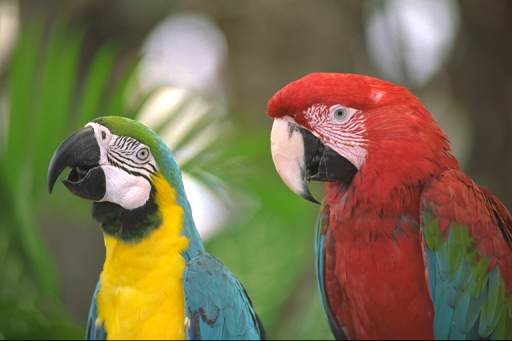
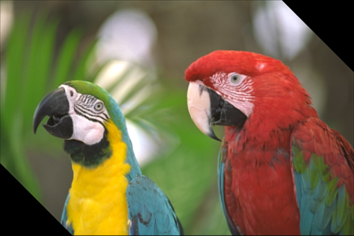
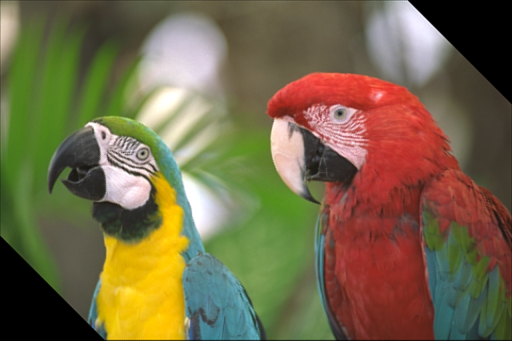
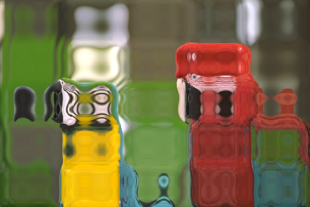

| Safe Haskell | None |
|---|---|
| Language | Haskell2010 |
OpenCV.ImgProc.GeometricImgTransform
Description
The functions in this section perform various geometrical transformations of 2D
images. They do not change the image content but deform the pixel grid and map
this deformed grid to the destination image. In fact, to avoid sampling
artifacts, the mapping is done in the reverse order, from destination to the
source. That is, for each pixel (x,y) of the destination image, the functions
compute coordinates of the corresponding "donor" pixel in the source image and
copy the pixel value:
dst(x,y) = src(fx(x,y), fy(x,y))
In case when you specify the forward mapping <gx,gy> : src -> dst, the OpenCV
functions first compute the corresponding inverse mapping <fx,fy>:dst->src
and then use the above formula.
The actual implementations of the geometrical transformations, from the most generic remap and to the simplest and the fastest resize, need to solve two main problems with the above formula:
- Extrapolation of non-existing pixels.
Similarly to the filtering functions described in the previous section, for some
(x,y), either one offx(x,y), orfy(x,y), or both of them may fall outside of the image. In this case, an extrapolation method needs to be used. OpenCV provides the same selection of extrapolation methods as in the filtering functions. In addition, it provides the methodBorderTransparent. This means that the corresponding pixels in the destination image will not be modified at all. - Interpolation of pixel values.
Usually
fx(x,y)andfy(x,y)are floating-point numbers. This means that<fx,fy>can be either an affine or perspective transformation, or radial lens distortion correction, and so on. So, a pixel value at fractional coordinates needs to be retrieved. In the simplest case, the coordinates can be just rounded to the nearest integer coordinates and the corresponding pixel can be used. This is called a nearest-neighbor interpolation. However, a better result can be achieved by using more sophisticated interpolation methods , where a polynomial function is fit into some neighborhood of the computed pixel(fx(x,y),fy(x,y)), and then the value of the polynomial at(fx(x,y),fy(x,y))is taken as the interpolated pixel value. In OpenCV, you can choose between several interpolation methods. See resize for details.
- data ResizeAbsRel
- resize :: ResizeAbsRel -> InterpolationMethod -> Mat (S '[height, width]) channels depth -> CvExcept (Mat (S '[D, D]) channels depth)
- warpAffine :: Mat (S '[height, width]) channels depth -> Mat (ShapeT '[2, 3]) (S 1) (S Double) -> InterpolationMethod -> Bool -> Bool -> BorderMode -> CvExcept (Mat (S '[height, width]) channels depth)
- warpPerspective :: Mat (S '[height, width]) channels depth -> Mat (ShapeT '[3, 3]) (S 1) (S Double) -> InterpolationMethod -> Bool -> Bool -> BorderMode -> CvExcept (Mat (S '[height, width]) channels depth)
- invertAffineTransform :: Mat (ShapeT '[2, 3]) (S 1) depth -> CvExcept (Mat (ShapeT '[2, 3]) (S 1) depth)
- getPerspectiveTransform :: IsPoint2 point2 CFloat => Vector (point2 CFloat) -> Vector (point2 CFloat) -> Mat (ShapeT '[3, 3]) (S 1) (S Double)
- getRotationMatrix2D :: IsPoint2 point2 CFloat => point2 CFloat -> Double -> Double -> Mat (ShapeT '[2, 3]) (S 1) (S Double)
- remap :: Mat (S '[inputHeight, inputWidth]) inputChannels inputDepth -> Mat (S '[outputHeight, outputWidth]) (S 2) (S Float) -> InterpolationMethod -> BorderMode -> CvExcept (Mat (S '[outputHeight, outputWidth]) inputChannels inputDepth)
Documentation
data ResizeAbsRel Source #
Constructors
| ResizeAbs Size2i | Resize to an absolute size. |
| ResizeRel (V2 Double) | Resize with relative factors for both the width and the height. |
Instances
resize :: ResizeAbsRel -> InterpolationMethod -> Mat (S '[height, width]) channels depth -> CvExcept (Mat (S '[D, D]) channels depth) Source #
Resizes an image
To shrink an image, it will generally look best with InterArea interpolation,
whereas to enlarge an image, it will generally look best with InterCubic
(slow) or InterLinear (faster but still looks OK).
Example:
resizeInterAreaImg :: Mat ('S ['D, 'D]) ('S 3) ('S Word8)
resizeInterAreaImg = exceptError $
withMatM (h ::: w + (w `div` 2) ::: Z)
(Proxy :: Proxy 3)
(Proxy :: Proxy Word8)
transparent $ imgM -> do
birds_resized <-
pureExcept $ resize (ResizeRel $ pure 0.5) InterArea birds_768x512
matCopyToM imgM (V2 0 0) birds_768x512 Nothing
matCopyToM imgM (V2 w 0) birds_resized Nothing
lift $ arrowedLine imgM (V2 startX y) (V2 pointX y) red 4 LineType_8 0 0.15
where
[h, w] = miShape $ matInfo birds_768x512
startX = round $ fromIntegral w * (0.95 :: Double)
pointX = round $ fromIntegral w * (1.05 :: Double)
y = h `div` 4

Arguments
| :: Mat (S '[height, width]) channels depth | Source image. |
| -> Mat (ShapeT '[2, 3]) (S 1) (S Double) | Affine transformation matrix. |
| -> InterpolationMethod | |
| -> Bool | Perform the inverse transformation. |
| -> Bool | Fill outliers. |
| -> BorderMode | Pixel extrapolation method. |
| -> CvExcept (Mat (S '[height, width]) channels depth) | Transformed source image. |
Applies an affine transformation to an image
Example:
rotateBirds :: Mat (ShapeT [2, 3]) ('S 1) ('S Double)
rotateBirds = getRotationMatrix2D (V2 256 170 :: V2 CFloat) 45 0.75
warpAffineImg :: Birds_512x341
warpAffineImg = exceptError $
warpAffine birds_512x341 rotateBirds InterArea False False (BorderConstant black)
warpAffineInvImg :: Birds_512x341
warpAffineInvImg = exceptError $
warpAffine warpAffineImg rotateBirds InterCubic True False (BorderConstant black)

 

Arguments
| :: Mat (S '[height, width]) channels depth | Source image. |
| -> Mat (ShapeT '[3, 3]) (S 1) (S Double) | Perspective transformation matrix. |
| -> InterpolationMethod | |
| -> Bool | Perform the inverse transformation. |
| -> Bool | Fill outliers. |
| -> BorderMode | Pixel extrapolation method. |
| -> CvExcept (Mat (S '[height, width]) channels depth) | Transformed source image. |
Applies a perspective transformation to an image
invertAffineTransform Source #
Inverts an affine transformation
getPerspectiveTransform Source #
Arguments
| :: IsPoint2 point2 CFloat | |
| => Vector (point2 CFloat) | Array of 4 floating-point Points representing 4 vertices in source image |
| -> Vector (point2 CFloat) | Array of 4 floating-point Points representing 4 vertices in destination image |
| -> Mat (ShapeT '[3, 3]) (S 1) (S Double) | The output perspective transformation, 3x3 floating-point-matrix. |
Calculates a perspective transformation matrix for 2D perspective transform
Arguments
| :: IsPoint2 point2 CFloat | |
| => point2 CFloat | Center of the rotation in the source image. |
| -> Double | Rotation angle in degrees. Positive values mean counter-clockwise rotation (the coordinate origin is assumed to be the top-left corner). |
| -> Double | Isotropic scale factor. |
| -> Mat (ShapeT '[2, 3]) (S 1) (S Double) | The output affine transformation, 2x3 floating-point matrix. |
Calculates an affine matrix of 2D rotation
Arguments
| :: Mat (S '[inputHeight, inputWidth]) inputChannels inputDepth | Source image. |
| -> Mat (S '[outputHeight, outputWidth]) (S 2) (S Float) | A map of |
| -> InterpolationMethod | Interpolation method to use. Note that |
| -> BorderMode | |
| -> CvExcept (Mat (S '[outputHeight, outputWidth]) inputChannels inputDepth) |
Applies a generic geometrical transformation to an image.
The function remap transforms the source image using the specified map:
dst(x,y) = src(map(x,y))
Example:
remapImg
:: forall (width :: Nat)
(height :: Nat)
(channels :: Nat)
(depth :: * )
. (Mat ('S ['S height, 'S width]) ('S channels) ('S depth) ~ Birds_512x341)
=> Mat ('S ['S height, 'S width]) ('S channels) ('S depth)
remapImg = exceptError $ remap birds_512x341 transform InterLinear (BorderConstant black)
where
transform = exceptError $
matFromFunc (Proxy :: Proxy [height, width])
(Proxy :: Proxy 2)
(Proxy :: Proxy Float)
exampleFunc
exampleFunc [_y, x] 0 = wobble x w
exampleFunc [ y, _x] 1 = wobble y h
exampleFunc _pos _channel = error "impossible"
wobble :: Int -> Float -> Float
wobble v s = let v' = fromIntegral v
n = v' / s
in v' + (s * 0.05 * sin (n * 2 * pi * 5))
w = fromInteger $ natVal (Proxy :: Proxy width)
h = fromInteger $ natVal (Proxy :: Proxy height)
